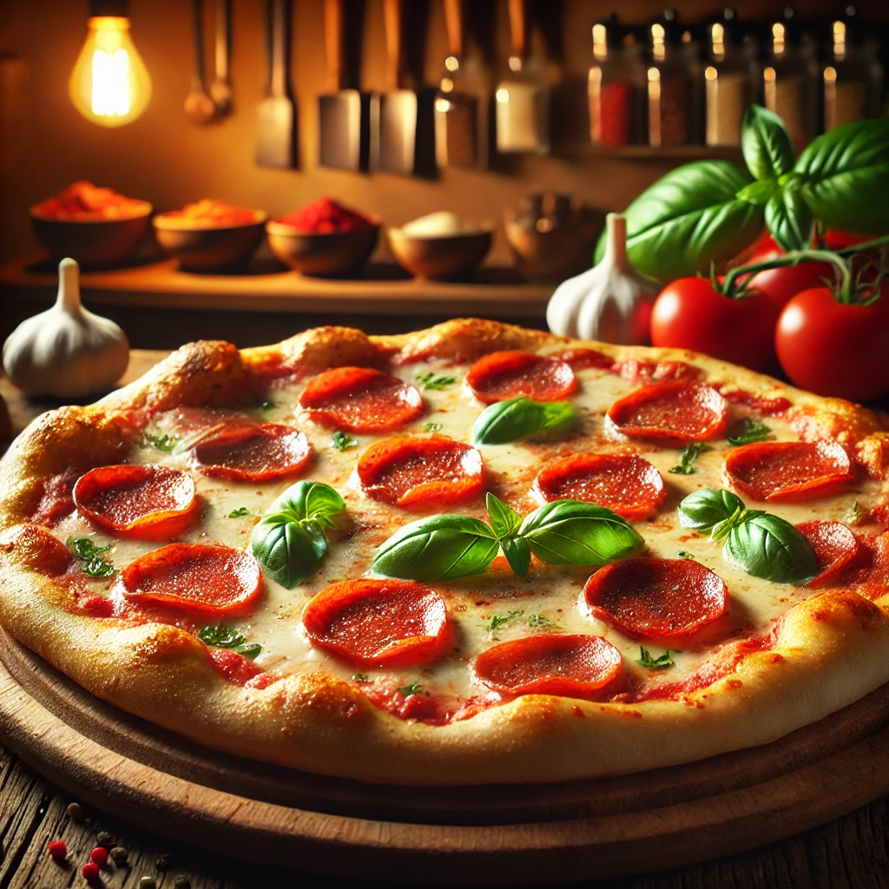

Home
Pizza

Description
Pizza is a savory dish of Italian origin, consisting of a flat, round bread dough topped with tomato sauce and cheese, and baked in an oven.
It is a popular food in many parts of the world, including Italy, the United States, and Canada.
Ingredients
- Pizza dough
- Pizza sauce
- Pizza cheese
Steps
- Preheat oven to 450 degrees F (230 degrees C).
- In a large skillet over medium-high heat, brown beef and season with salt and pepper; drain. Stir in spaghetti sauce and garlic and simmer 5 minutes.
- In a medium bowl, combine mozzarella, parmesan and ricotta; stir well. In 9x13 inch pan, alternate layers of noodles, meat mixture and cheese mixture until pan is filled.
- Bake in preheated oven for 30 minutes, or until cheese is melted and bubbly.